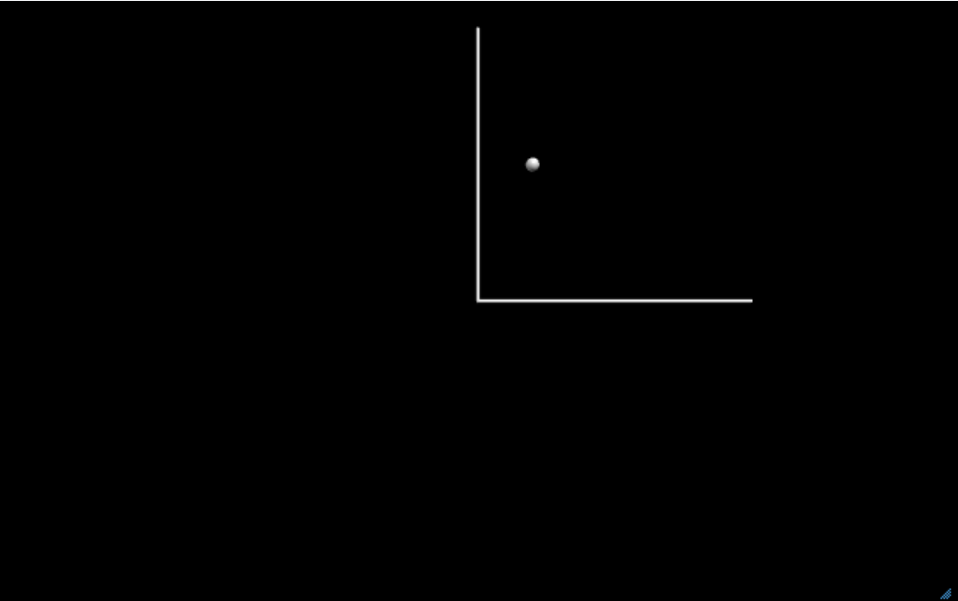

Objective
Code: Python (vpython) (Glowscript)
Outcome
Create the first point at (2, 4): Create a sphere object with a variable name "p1" and two
properties: the position is at the coordinate (2, 4), and the radius is 0.25 units.
p1 = sphere(pos=vec(2,4,0), radius=0.25)

Add axes so you can see where things are. To draw lines you use a curve
object and give the coordinates of points that will be connected by straight lines.
The positions of the points are given in an array.
p1 = sphere(pos=vec(2,4,0), radius=0.25)
axes = curve(pos=[vec(0, 10, 0), vec(0, 0, 0), vec(10,0,0)])

Now add the second point at (6, 7)

Draw a line between the two points.
Show Notes ▼
You can use the position property (.pos) to get the locations of the points.
p1 = sphere(pos=vec(2,4,0), radius=0.25)
p2 = sphere(pos=vec(6,7,0), radius=0.25)
axes = curve(pos=[vec(0, 10, 0), vec(0, 0, 0), vec(10,0,0)])
line = curve(pos=[p1.pos, p2.pos])

Extend the line between the two points so it intercepts the y-axis.